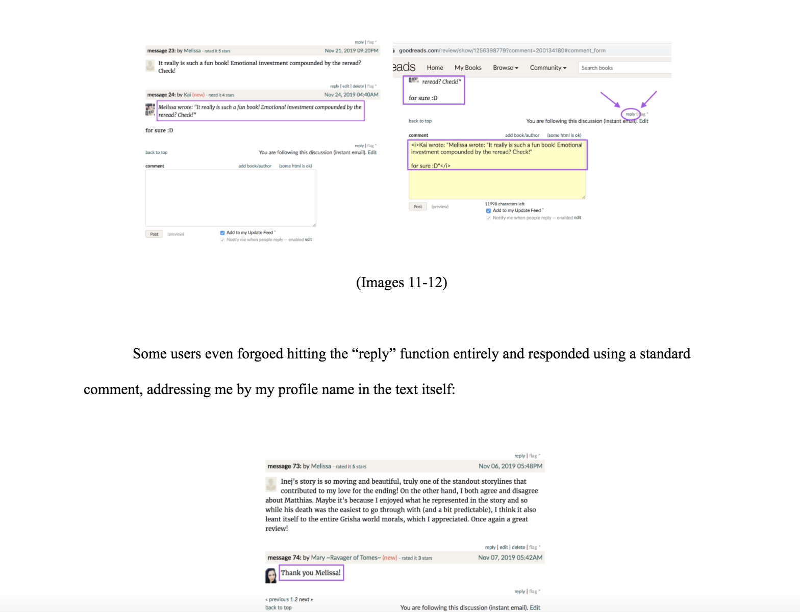

Themes I'm interested in: aeshetics, accessibility, color theory, storytelling through design, marketing"
Some places that I have worked for and with in the past include Coaching Detroit Forward, a nonprofit based in Detroit that aims to provide journalism and photography camps to high school students, as well as Lloyd Scholars for Writing and the Arts. LSWA is a living-learning community that I was a part of, and has shaped my creative direction. While they have shaped me to who I am today, I would love to go back and help in anyway I can again.
My favorite project so far, besides building this website, was the Occupy Social Media project for SI 110. That class was my introduction to the field of Information Science. After two years of trying out different majors, writing an analysis on the design choices and usability a social media platform (in my case, Goodreads) was what, as Marie Kondo says, "sparked joy!".
Screenshot from my OSM analysis.
I really enjoyed blending and applying the various bits of psychology, art theory, and history knowledge I've picked up throughout the years to being able to explain why Goodreads' design made me want to throw a shoe at my screen. I'd love to go more in-depth (and with more accurate technical Information vocabulary) on similar projects!